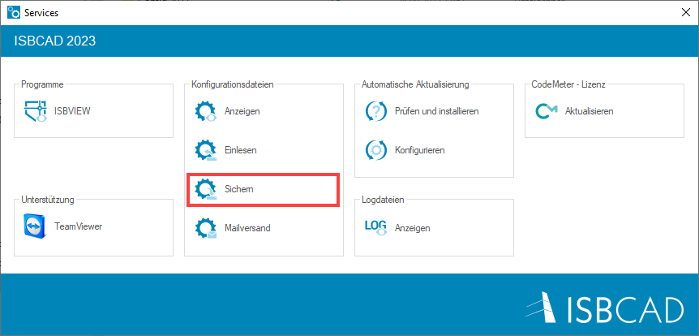
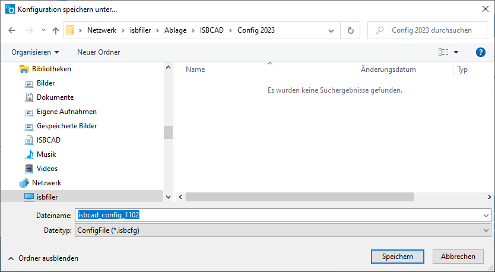
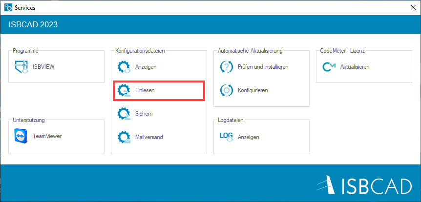
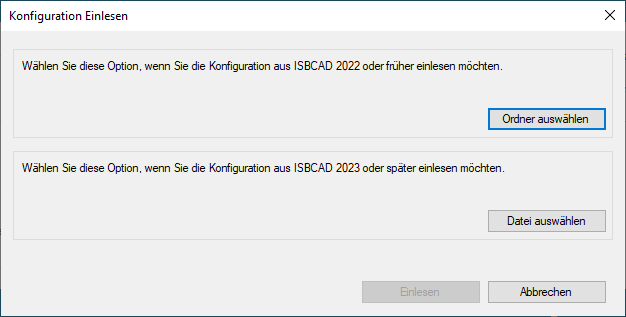
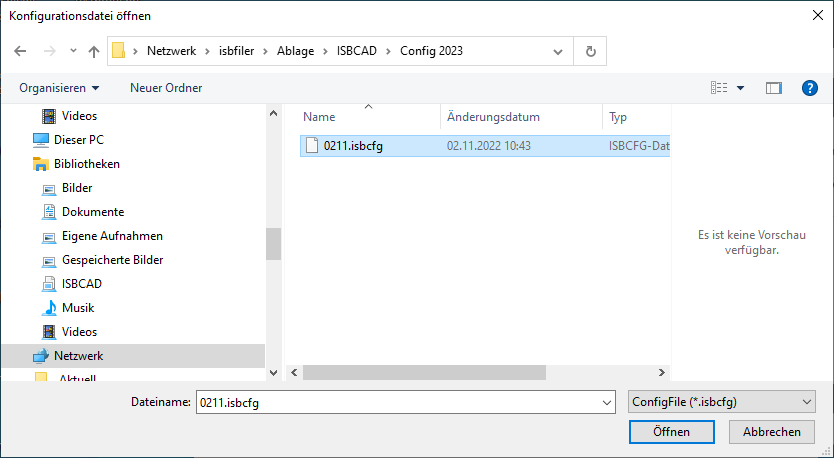
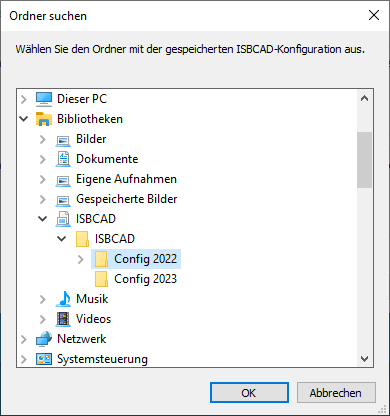

Windows-Startmenü → Programmgruppe ISBCAD 2026 → Services.
Erstellen Sie ein Backup Ihrer ISBCAD-Einstellungen, um sie bei Bedarf wiederherzustellen oder auf einem anderen Rechner zu verwenden. So stellen Sie sicher, dass Ihre Pläne genau so dargestellt und ausgegeben werden, wie Sie es eingestellt haben.
Gesichert wird der ISBCAD-Konfigurationsordner, der Ihre Profile und alle weiteren, profilunabhängigen Einstellungen enthält wie:
·Tastaturbefehle (Hotkeys)
·Zusammenstellung der Favoritenleiste
·Anschriften für Stahllistenköpfe
Die Einstellungen werden in einer ISBCFG-Datei gespeichert.
|
Wichtig: |
|
Beim Einlesen einer ISBCFG-Datei werden die vorhandenen ISBCAD-Einstellungen des Zielrechners überschrieben! |

So sichern Sie Ihre Einstellungen
§Schließen Sie alle Instanzen von ISBCAD, auch das ISBCAD Hauptmenü.
§Wählen Sie im Windows Startmenü das Programmverzeichnis ISBCAD 2026 und klicken Sie auf Services.
Alternativ: Nutzen Sie die Windows Schnellsuche. Geben Sie im Suchfeld auf der Taskleiste den Begriff "Services" (ohne Anführungszeichen) ein, oder drücken Sie die Taste mit dem Windows-Logo auf der Tastatur, und beginnen Sie mit der Eingabe.
§Klicken Sie im Dialog auf den Eintrag Sichern.
 |
§Wählen Sie den Ordner, wo die Konfigurationsdateien gespeichert werden sollen.
 |
§Geben Sie den Dateinamen ein und klicken Sie auf Speichern. Die Konfigurationsdateien werden in einer gepackten Datei im ISBCFG-Format gespeichert.
So lesen Sie Ihre Einstellungen ein
Ihre aktuellen Konfigurationsdateien werden durch das Einlesen überschrieben. Sichern Sie Ihre Konfigurationsdateien, falls Sie diese zu einem späteren Zeitpunkt wiederherstellen möchten.
§Schließen Sie alle Instanzen von ISBCAD, auch das ISBCAD Hauptmenü.
§Wählen Sie im Windows Startmenü das Programmverzeichnis ISBCAD 2026 und klicken Sie auf Services.
Alternativ: Nutzen Sie die Windows Schnellsuche. Geben Sie im Suchfeld auf der Taskleiste den Begriff "Services" (ohne Anführungszeichen) ein, oder drücken Sie die Taste mit dem Windows-Logo auf der Tastatur, und beginnen Sie mit der Eingabe.
§Klicken Sie im Dialog auf den Eintrag Einlesen.
 |
§Führen Sie einen der folgenden Schritte aus:
a)Um die Konfigurationsdateien aus ISBCAD 2022 oder einer früheren Version einzulesen, klicken Sie auf Ordner auswählen.
b)Um eine Konfigurationsdatei ab ISBCAD 2023 einzulesen, klicken Sie auf Datei auswählen.
 |
ISBCAD 2023 und später
§Wählen Sie die Konfigurationsdatei im Windows Explorer aus und klicken Sie auf Öffnen.
 |
§Klicken Sie anschließend auf Einlesen.
Die Konfigurationsdatei wird entpackt und die Profile und einzelnen Konfigurationsdateien werden in das ISBCAD Config-Verzeichnis kopiert. Der bestehende Ordner-Inhalt wird überschrieben.
ISBCAD 2022 und früher
§Wählen Sie den Ordner, wo die Konfigurationsdateien gespeichert sind und bestätigen Sie mit OK.
 |
§Klicken Sie anschließend auf Einlesen.
Die Konfigurationsdateien werden in das ISBCAD Config-Verzeichnis kopiert. Die vorhandenen Konfigurationsdateien werden überschrieben.
Siehe auch:
·Konfiguration und Einrichtung
Zugehörige Referenz: